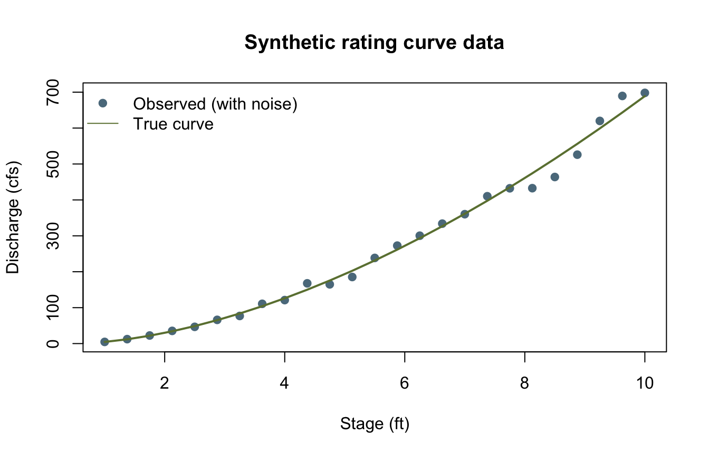
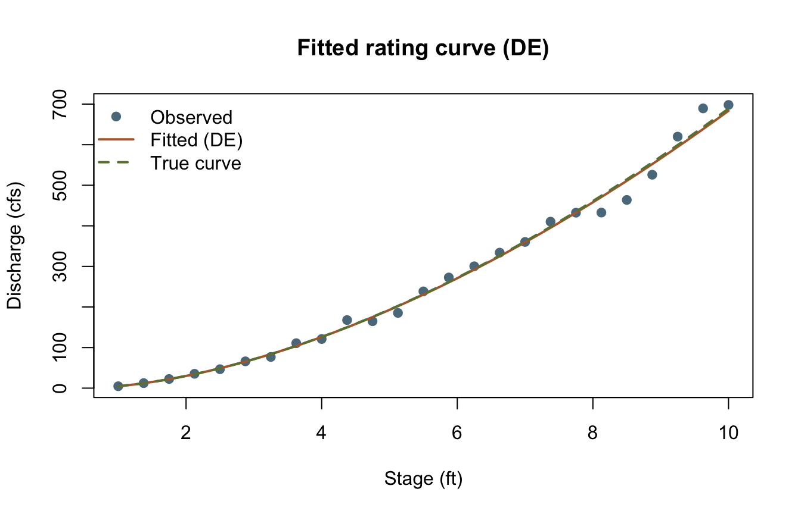

library(corehydror)13. A custom objective
Every other fitting verb in this package – dist_fit(), fit_mle(), model_bulletin17c() and friends – wraps a model the port already knows how to build. Sometimes the model is yours: a custom rating curve, a regional regression, anything you can write as a likelihood in a handful of lines. optim_minimize()/optim_maximize() expose the same six ported Numerics optimizers those verbs use internally, over a plain R function, so a hand-written likelihood gets the same optimizers – including the same seeded differential evolution, whose PARAMETERS reproduce bit-exact across languages – as the built-in models. It has no upstream counterpart: the USACE-RMC Numerics-Python-Examples repository has no general-purpose optimization notebook.
What you’ll learn
- Write a small negative log-likelihood by hand and hand it to
optim_minimize(). - Fit it two ways – global (
"de", seeded) and local ("bfgs", from a starting guess) – and see the two agree. - Confirm the seeded
"de"run’s PARAMETERS are bit-identical to the Python twin’s: the optimizer’s candidate-generating random number stream lives in the shared C++ core, not in R or Python. optim_maximize()’s sign convention: it does not negate the objective’s own value.
Setup
A synthetic rating curve
A power-law stage-discharge relationship, \(Q = a\,(h - h_0)^b\), is the classic hydraulic rating curve – discharge as a power of stage above some effective channel-control elevation \(h_0\). This is deliberately NOT the BaRatin model behind rating_curve_analysis() (that one fits a matrix-of-controls addition-mode curve with its own log10-space likelihood); it is a small, different model written from scratch to show what optim_minimize() is for.
Twenty-five stage readings and a synthetic “true” curve with multiplicative log-normal measurement error – the noise draw is seeded through the port, so it is bit-identical to the Python twin’s.
stage <- seq(1, 10, length.out = 25)
a_true <- 15
b_true <- 1.7
h0_true <- 0.5
discharge_true <- a_true * (stage - h0_true)^b_true
noise <- dist_random(distribution("Normal", c(0, 0.05)), 25, seed = 2024)
discharge <- discharge_true * exp(noise)
cat(sprintf("First three discharges: %s\n",
paste(sprintf("%.6f", discharge[1:3]), collapse = ", ")))First three discharges: 4.668426, 12.377813, 22.499345plot(stage, discharge, pch = 19, col = "#5b7a8c",
xlab = "Stage (ft)", ylab = "Discharge (cfs)", main = "Synthetic rating curve data")
lines(stage, discharge_true, col = "#6b7f3f", lwd = 2)
legend("topleft", c("Observed (with noise)", "True curve"), pch = c(19, NA), lty = c(NA, 1),
col = c("#5b7a8c", "#6b7f3f"), bty = "n")
The likelihood
Four parameters: \(a\), \(b\), \(h_0\), and the log-space error standard deviation \(\sigma\). Assuming independent log-normal errors, the negative log-likelihood is
\[ -\ell(a, b, h_0, \sigma) = \sum_{i=1}^{n} \left[ \tfrac12 \log(2\pi\sigma^2) + \frac{\left(\log Q_i - \log\hat{Q}_i\right)^2}{2\sigma^2} \right], \qquad \hat{Q}_i = a\,(h_i - h_0)^b \]
optim_minimize() needs lower/upper bounds for every method, including "de", which takes no starting guess at all; "bfgs" additionally needs one (initial).
nll <- function(p) {
a <- p[1]; b <- p[2]; h0 <- p[3]; sigma <- p[4]
predicted <- a * pmax(stage - h0, 1e-6)^b
resid <- log(discharge) - log(predicted)
-sum(dnorm(resid, mean = 0, sd = sigma, log = TRUE))
}
lower <- c(1, 0.5, 0, 0.001)
upper <- c(50, 4, 2, 1)Fit two ways
Differential evolution ("de") is a global, population-based, stochastic method – seeded here, so it reproduces exactly on every run and, more importantly, its PARAMETERS reproduce exactly in the Python twin (see the reproduction check for the caveat on value and on BFGS). BFGS is a local, gradient-based method that needs a starting guess; control = list(compute_hessian = FALSE) skips the (here, unneeded) numerical Hessian both methods compute by default.
fit_de <- optim_minimize(nll, lower = lower, upper = upper, method = "de", seed = 2024,
control = list(compute_hessian = FALSE))
fit_bfgs <- optim_minimize(nll, lower = lower, upper = upper, initial = c(10, 1, 0, 0.1),
method = "bfgs", control = list(compute_hessian = FALSE))
print(fit_de)<corehydro_optim> Success after 173 iterations (6960 evaluations)
value: -37.317232
parameters: 15.0502391, 1.6946140, 0.4951150, 0.0543867print(fit_bfgs)<corehydro_optim> Success after 26 iterations (630 evaluations)
value: -37.317232
parameters: 15.0498671, 1.6946263, 0.4951045, 0.0543871Global and local agree to about four decimal places, and both land close to the true generating parameters (\(a=15\), \(b=1.7\), \(h_0=0.5\), \(\sigma=0.05\)) – unsurprising with a clean, well-identified likelihood and only mild noise, but worth checking rather than assuming.
comparison <- rbind(
True = c(a_true, b_true, h0_true, 0.05),
DE = fit_de$parameters,
BFGS = fit_bfgs$parameters
)
colnames(comparison) <- c("a", "b", "h0", "sigma")
print(round(comparison, 4)) a b h0 sigma
True 15.0000 1.7000 0.5000 0.0500
DE 15.0502 1.6946 0.4951 0.0544
BFGS 15.0499 1.6946 0.4951 0.0544optim_maximize()’s sign convention
Maximizing the log-likelihood directly (the negation of nll) with the same seed lands on the same parameters DE found minimizing nll – and optim_maximize()’s reported value is the objective’s OWN value at the optimum, not negated, so it comes out as -fit_de$value rather than fit_de$value.
log_likelihood <- function(p) -nll(p)
fit_de_max <- optim_maximize(log_likelihood, lower = lower, upper = upper, method = "de",
seed = 2024, control = list(compute_hessian = FALSE))
cat(sprintf("optim_minimize(nll)$value: %.6f\n", fit_de$value))optim_minimize(nll)$value: -37.317232cat(sprintf("optim_maximize(log_likelihood)$value: %.6f\n", fit_de_max$value))optim_maximize(log_likelihood)$value: 37.317232cat(sprintf("Same parameters: %s\n", isTRUE(all.equal(fit_de$parameters, fit_de_max$parameters))))Same parameters: TRUEPlot: fitted curve
h_grid <- seq(min(stage), max(stage), length.out = 200)
fitted_curve <- fit_de$parameters[1] * pmax(h_grid - fit_de$parameters[3], 0)^fit_de$parameters[2]
plot(stage, discharge, pch = 19, col = "#5b7a8c",
xlab = "Stage (ft)", ylab = "Discharge (cfs)", main = "Fitted rating curve (DE)")
lines(h_grid, fitted_curve, col = "#b06a3b", lwd = 2)
lines(stage, discharge_true, col = "#6b7f3f", lwd = 2, lty = 2)
legend("topleft", c("Observed", "Fitted (DE)", "True curve"),
pch = c(19, NA, NA), lty = c(NA, 1, 2), lwd = c(NA, 2, 2),
col = c("#5b7a8c", "#b06a3b", "#6b7f3f"), bty = "n")
Key takeaways
optim_minimize()/optim_maximize()take any R function of a numeric parameter vector – nothing about the model needs to be one the port already knows how to build.- A seeded
"de"run’s PARAMETERS are exactly reproducible, run to run and language to language: the PRNG lives in the shared C++ core, not in R’s or Python’s own random state. The reported objective VALUE only agrees to about 15 decimal digits, because it comes from re-evaluating each language’s own likelihood code. - Global (
"de") and local ("bfgs") methods are worth cross-checking against each other on the same objective, not just trusted individually. optim_maximize()’svalueis the objective’s own value at the optimum – never negated – so maximizinglog_likelihoodreports the log-likelihood itself, not its negation.
Reproduction check
No upstream literals exist for this example (it has no upstream counterpart), so every value below is an internal-consistency or cross-language check. One honest floating-point note, in the same spirit as example 09’s Box-Cox lambda: discharge and DE’s parameters are bit-identical across languages, because they never leave the shared, seeded C++ core (the synthetic-noise draw and DE’s own candidate-generation stream). fit_de$value, by contrast, comes from re-evaluating THIS PAGE’S OWN likelihood – R’s dnorm(..., log = TRUE) here, a hand-written equivalent in Python – at that shared parameter vector, and R’s and Python’s floating-point libraries do not guarantee bit-identical rounding for the same formula, so it only agrees to about 15 decimal digits, not all 17. BFGS goes further: as a local, gradient-based method, it is sensitive enough to those same sub-ulp differences that its OWN trajectory diverges slightly language to language (both still land within about 1e-10 of each other and close to the truth), so its numbers below are asserted within R only, not pinned against a Python literal.
near <- \(x, literal, tol = 1e-15) abs(x / literal - 1) < tol
stopifnot(
# DE and BFGS agree with each other to 1e-3 and recover parameters close to the truth.
max(abs(fit_de$parameters - fit_bfgs$parameters)) < 1e-3,
abs(fit_de$parameters[1] - a_true) < 0.2,
abs(fit_de$parameters[2] - b_true) < 0.05,
abs(fit_de$parameters[3] - h0_true) < 0.05,
# optim_maximize()'s value is the exact negation of optim_minimize()'s on the negated objective,
# and both land on the same parameters.
isTRUE(all.equal(fit_de$parameters, fit_de_max$parameters)),
near(fit_de_max$value, -fit_de$value),
# BFGS reproduces within R (this file's own regression, not a cross-language claim -- see above).
near(fit_bfgs$parameters[1], 15.049867097337126),
near(fit_bfgs$parameters[2], 1.6946263072106593),
near(fit_bfgs$parameters[3], 0.49510447626655224),
near(fit_bfgs$parameters[4], 0.054387129725377112),
near(fit_bfgs$value, -37.317232116709945),
# Cross-language identity: the Python notebook asserts these same literals for `discharge` and
# DE's `parameters` (bit-exact, see above); DE's `value` is asserted only to 1e-13 relative,
# comfortably above the ~1e-16 drift actually measured but well below "coincidentally close".
near(discharge[1], 4.66842623508654),
near(discharge[2], 12.377812912604149),
near(discharge[3], 22.499344656381929),
near(fit_de$parameters[1], 15.050239124703497),
near(fit_de$parameters[2], 1.6946139965788718),
near(fit_de$parameters[3], 0.49511501008458236),
near(fit_de$parameters[4], 0.054386727106046459),
near(fit_de$value, -37.317232039101832, tol = 1e-13)
)
cat("All reproduction checks passed.\n")All reproduction checks passed.